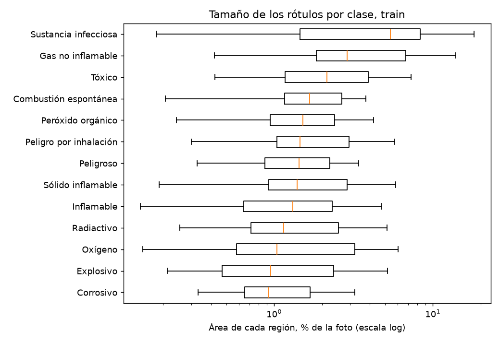
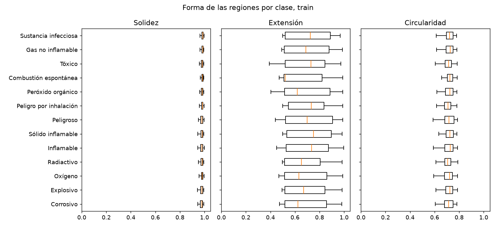
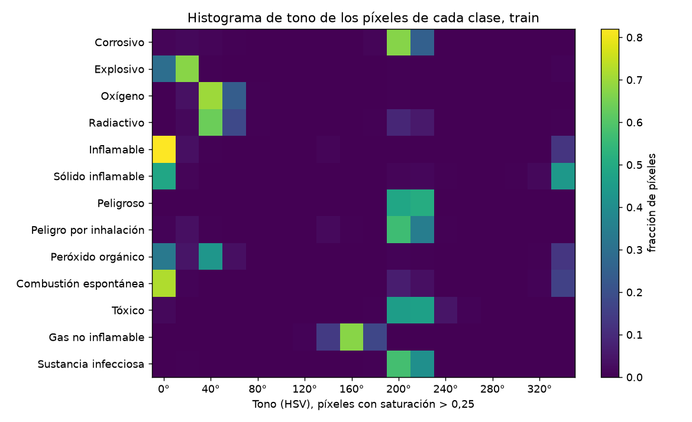

Complementos de datos: fuga, shift, ruido, techo y EDA por clase#
Este capítulo reúne análisis que se cierran en CPU con los datos y los registros del repositorio, sin checkpoints
ni inferencia nueva. Todos son exploratorios y posteriores a la apertura del test: no cambian la selección de
modelos, el umbral, el ranking oficial ni las conclusiones cerradas en resultados_e2.md. Cada cifra sale de un
script versionado y de un JSON en resultados/; la tabla final dice cuál.
Partición. Antes de reutilizar cálculos hechos sobre la misma partición en otro árbol de trabajo se verificó que
es la misma: SHA-256 idénticos de train.csv, val.csv, test.csv y normalization_train.json, cero filas
distintas en id, grupo y partición, y las 1.451 imágenes con el SHA-256 de los manifiestos
(resultados/fuga_embeddings_e2/RESUMEN.json, campo particion). Las 1.451 máscaras binarias, que el snapshot no
trae, se regeneraron con reconstruir_mascaras_binarias_e2.py y coinciden byte a byte con los SHA-256 del
manifiesto.
Fuga residual por embeddings (controles 11 y 46)#
Los grupos de similitud se formaron con dHash y aHash, que no ven rotaciones, recortes ni cambios de encuadre. Para buscar lo que se les escapó, cada imagen se representó con una ResNet-50 de ImageNet-1k (promedio global, 2.048 dimensiones, mismo letterbox a 256) y se midió el coseno máximo contra train. Ese máximo, tomado sobre unas mil comparaciones, es alto aunque no haya fuga, así que no se compara con un percentil de pares sueltos: la referencia es la misma estadística dentro de train, cada imagen contra el resto de train sin su propio grupo. Como ancla, los pares dentro de un mismo grupo dHash (casi duplicados conocidos) tienen coseno con percentil 5 de 0,981 y mediana de 0,992.
Fracción de imágenes con coseno máximo contra train mayor que… |
0,90 |
0,94 |
0,96 |
0,97 |
0,98 |
|---|---|---|---|---|---|
Train fuera de su grupo (referencia) |
0,82 |
0,31 |
0,11 |
0,042 |
0,010 |
Validación, vista original |
0,82 |
0,36 |
0,09 |
0,023 |
0,005 |
Test, vista original |
0,76 |
0,35 |
0,11 |
0,050 |
0,009 |
Validación, máximo sobre rotaciones de 90° y volteos |
0,90 |
0,43 |
0,13 |
0,060 |
0,014 |
Test, máximo sobre rotaciones de 90° y volteos |
0,89 |
0,47 |
0,16 |
0,060 |
0,014 |
Las dos últimas filas toman el máximo sobre ocho variantes de cada imagen; eso sube la cifra por construcción y sirve como cota de duplicados girados, no como comparación con train.
Lectura.
La partición no añade fuga respecto de la que ya hay entre grupos dentro de train. Validación y test se parecen a train como train se parece a sí mismo fuera de su grupo, a todas las alturas.
Los grupos dHash no separan sesiones de fotos. Dentro de train hay 33 pares de grupos distintos por encima de 0,97: 43 imágenes (4,2 %) de 24 grupos tienen, en otro grupo, una foto casi igual. Por encima de 0,97 se ve casi la misma fotografía con un encuadre apenas distinto; entre 0,95 y 0,96, la misma sesión con otro encuadre; entre 0,92 y 0,94, la misma escena montada con rótulos distintos.
Casi duplicados de val y test frente a train. Con rotaciones y volteos, 13 imágenes de test en 9 grupos de 122 y 13 imágenes de validación en 8 grupos superan 0,97. Los 9 grupos de test son
g_image_0004,g_image_0059,g_image_0204,g_image_0398,g_image_0501,g_image_0563,g_image_0677,g_image_0750yg_image_1345(grupos_casi_duplicado.json).Alcance. El Dice de test mide generalización a fotos nuevas de las mismas sesiones y escenas, no a sesiones nuevas. Es optimista respecto de una operación real, y lo es para todos los modelos.
Sensibilidad del Dice sin los 9 grupos#
sensibilidad_casi_duplicados_e2.py repite el resumen por grupos quitando esos 9 grupos. Los 50 JSON de test por
corrida no están en el repositorio; sí están la precisión y la exhaustividad por imagen de las 10 redes con semilla
11 (bordes_seed11_por_imagen.json), y de ellas el Dice por imagen sale exacto: 2PR/(P+R) = 2TP/(2TP+FP+FN). La
auditoría del test recalculó esas 2.180 máscaras contra los JSON sin incidencias. Es una semilla, no el promedio
de cinco, por eso la segunda columna no coincide con la oficial. Con los 50 JSON presentes como hermanos del
proyecto, el mismo script usa las cinco semillas sin cambios; su cálculo se probó con 50 JSON sintéticos
(--fuente simular).
Red |
Dice oficial (5 semillas) |
Dice seed11, 122 grupos |
Sin los 9 grupos (113) |
Cambio |
Dice en los 9 menos el resto [IC 95 %] |
|---|---|---|---|---|---|
TransUNet |
0,8626 |
0,8712 |
0,8663 |
−0,0048 |
+0,066 [+0,032; +0,101] |
U-Net |
0,8464 |
0,8422 |
0,8366 |
−0,0056 |
+0,076 [+0,028; +0,124] |
FCN |
0,8535 |
0,8430 |
0,8369 |
−0,0061 |
+0,083 [+0,039; +0,125] |
VM-UNet |
0,8391 |
0,8786 |
0,8760 |
−0,0026 |
+0,036 [−0,002; +0,074] |
DeepLabv3+ |
0,8140 |
0,8079 |
0,8001 |
−0,0078 |
+0,106 [+0,043; +0,164] |
U-Net++ |
0,8076 |
0,8090 |
0,8012 |
−0,0078 |
+0,106 [+0,038; +0,170] |
PIDNet-S |
0,7936 |
0,7571 |
0,7474 |
−0,0097 |
+0,132 [+0,050; +0,205] |
SegNeXt-T |
0,7792 |
0,7747 |
0,7669 |
−0,0078 |
+0,106 [+0,031; +0,176] |
SegFormer-B0 |
0,7053 |
0,6957 |
0,6914 |
−0,0043 |
+0,058 [−0,134; +0,207] |
SegNet |
0,8247 |
0,7779 |
0,7713 |
−0,0066 |
+0,090 [−0,025; +0,181] |
Los grupos con casi duplicado son más fáciles para casi todas las redes (entre 4 y 13 puntos más de Dice), que es lo que se espera si parte del acierto viene de haber visto esa sesión. Pero pesan 9 de 122 grupos: quitarlos baja el Dice entre 0,003 y 0,010, el ranking de seed11 no cambia (τ de Kendall = 1) y la diferencia TransUNet − FCN en seed11 pasa de 0,0282 [0,0085; 0,0493] a 0,0294 [0,0082; 0,0517]. La fuga residual detectada no explica el orden de los modelos; sí recorta el alcance de la conclusión al de sesiones conocidas.
Shift train/validación (control 15)#
El análisis existente es train/test (AUC 0,560, p de permutación 0,090). shift_train_val_e2.py hace el par que
faltaba, train/validación, con los mismos 61 descriptores por imagen, sin máscara, el mismo clasificador
(regresión logística estandarizada y balanceada, 5 folds, semilla 20261120) y 200 permutaciones, y añade dos
pruebas que no dependen de un clasificador. Unidad: grupo (567 de train, 122 de validación). Validación ya se usó
para elegir checkpoints, así que un shift train/val afectaría a la selección, no al test.
Prueba |
Resultado |
|---|---|
KS por rasgo (9 de imagen y 3 de máscara), Holm |
D máximo 0,10 (desviación de R y de B); ningún p ajustado bajo 1 |
MMD, núcleo gaussiano, 61 descriptores |
MMD² = −0,0025, p = 0,92 (200 permutaciones) |
MMD con fracción etiquetada, regiones y perímetro |
MMD² = −0,0023, p = 0,93 |
Clasificador adversarial train/val |
AUC 0,450, IC 95 % condicional [0,393; 0,509], p = 0,90; percentil 95 del nulo 0,562 |
Una AUC algo menor que 0,5 es lo habitual cuando no hay señal y se valida cruzado (las predicciones fuera de fold quedan levemente anticorrelacionadas con la etiqueta). La auditoría de origen sobre la misma partición, con otros diez rasgos (ancho, alto, aspecto, luminancia, contraste, saturación, nitidez, fracción etiquetada, regiones y área media de región), dio lo mismo: ningún KS significativo tras Holm, MMD p = 0,66, AUC adversarial 0,49 (p = 0,55) con logística y 0,46 con gradient boosting, y χ² de categorías train/val p = 0,26. Los KS de los rasgos comunes coinciden exactamente (aspecto D = 0,046; fracción etiquetada 0,093; regiones 0,076).
No rechazar no demuestra ausencia de shift: los descriptores son globales y la potencia frente a cambios pequeños con unos 690 grupos es limitada.
Ruido de etiqueta (control 12)#
Se revisaron 100 imágenes al azar de train (82) y validación (18), nunca de test, comparando la máscara con la foto.
Una primera pasada asistida marcó 7 errores y 5 dudosos; esos 12 casos se confirmaron después a mano, uno por uno,
con la foto ampliada junto a la máscara (resultados/ruido_etiqueta_e2/confirmar.csv, columnas confirma y
veredicto_final; ruido_etiqueta_e2.py --confirmar recalcula todo). Se confirmaron los 7 errores y 3 de los 5
dudosos; los otros 2 resultaron correctos (en uno, el contorno sobresale unos píxeles, lo que no se cuenta como error).
Partición |
Imágenes con error |
Tasa |
IC 95 % Wilson |
|---|---|---|---|
Train y validación |
10 de 100 |
10,0 % |
5,5 % a 17,4 % |
Train |
9 de 82 |
11,0 % |
5,9 % a 19,6 % |
Validación |
1 de 18 |
5,6 % |
1,0 % a 25,8 % |
El IC de Wilson es el intervalo de confianza para una proporción que se usa con muestras chicas o tasas cercanas a 0: no se sale de [0, 1] y no es simétrico. La revisión la hizo una sola persona; no mide acuerdo entre anotadores (eso lo hace el techo, más abajo).
Hallazgo: los diez errores son del mismo tipo. En todos, un rótulo cortado por el borde de la foto quedó sin máscara (tipo falta). No hubo contornos mal trazados, regiones sobrantes ni clases cambiadas. Las banderas automáticas (cajas contra instancias) no detectan este error, porque un rótulo sin máscara tampoco tiene caja.
¿Es una regla de anotación o una inconsistencia? Si el conjunto nunca anotara rótulos cortados, sería una regla que el modelo puede aprender. No es así: 86 de las 1.015 imágenes de train (8,5 %) y 21 de las 218 de validación (9,6 %) tienen al menos una región anotada que toca el borde (94 de 1.711 regiones de train). En la muestra hay ocho imágenes correctas con región anotada en el borde y diez con un rótulo cortado omitido. El modelo recibe señales contradictorias justo en los rótulos cortados, y el error en test sobre ellos es en parte irreducible respecto de estas etiquetas.
Límites: la tasa es por imagen, no por píxel. Un rótulo cortado suele ser pequeño, así que su efecto en el Dice por imagen está acotado pero no está medido. No se corrigió ninguna máscara, y menos de test.
Techo de desempeño y γ (control 63)#
La guía pide al menos una cota de referencia (acuerdo entre anotadores, ruido irreducible o desempeño humano) y γ = (s_techo − s_red)/(s_techo − s_base), la fracción del margen sobre un modelo base que la red aún no cubre.
Medición. Una segunda persona, que no había visto las máscaras ni las predicciones, reanotó 50 imágenes de
validación (nunca test), una por grupo, estratificadas por tercil del área etiquetada del grupo (17, 17 y 16;
semilla 20261117; resultados/techo_e2/muestra.csv). Recibió solo las fotos, con instrucciones de marcar los
rótulos cortados por el borde aparte, y las anotó con polígonos. techo_reanotacion_e2.py medir compara su máscara
con la del conjunto con la misma geometría y métrica que los modelos (letterbox 256, zona válida,
dataset_ready.metrics), media por grupo con IC bootstrap. El cálculo se había probado antes con reanotaciones
fabricadas por erosión y dilatación de 2 px (Dice 0,936 en 12 imágenes). gamma usa como base el clásico
HistGradientBoosting elegido en validación.
Techo: Dice 0,941 (IC95 bootstrap por grupos 0,928–0,953); mediana 0,953; IoU 0,892; por tercil de área (pequeño, medio, grande): 0,933, 0,941, 0,950. Clásico: 0,653 en validación y 0,645 en test.
Red |
Dice val (122 grupos) |
Dice en las 50 del techo |
Distancia al techo (mismas 50) |
γ val |
γ test |
|---|---|---|---|---|---|
TransUNet |
0,853 |
0,866 |
0,075 |
0,306 |
0,265 |
U-Net compacta |
0,832 |
0,864 |
0,077 |
0,379 |
0,320 |
FCN compacta |
0,831 |
0,851 |
0,091 |
0,383 |
0,296 |
VM-UNet |
0,821 |
0,837 |
0,105 |
0,419 |
0,345 |
DeepLabv3+ R18 |
0,813 |
0,820 |
0,121 |
0,444 |
0,429 |
U-Net++ R18 |
0,810 |
0,804 |
0,137 |
0,456 |
0,451 |
SegNet compacta |
0,806 |
0,828 |
0,114 |
0,469 |
0,393 |
PIDNet-S |
0,796 |
0,797 |
0,144 |
0,503 |
0,498 |
SegNeXt-T |
0,759 |
0,765 |
0,177 |
0,632 |
0,546 |
SegFormer-B0 |
0,703 |
0,717 |
0,225 |
0,829 |
0,796 |
Lectura. Dos personas coinciden en Dice 0,941: ese es el techo práctico de esta tarea con estas etiquetas, no 1. Sobre las mismas 50 imágenes, TransUNet llega a 0,866 y la U-Net compacta a 0,864, a unos 0,075 del techo. TransUNet cubre cerca del 70 % del margen entre el clásico y el techo (γ = 0,31 en validación y 0,27 en test); SegFormer-B0 apenas el 20 %. El margen que queda es real y mayor que las diferencias entre las mejores redes, así que hay espacio para mejorar sin pedir más precisión que la humana. El acuerdo humano baja poco en los rótulos pequeños (0,933 en el tercil de menor área frente a 0,950 en el mayor). TransUNet, en cambio, queda a 0,11 del techo en el tercil pequeño (0,825), a 0,03 en el medio (0,908) y a 0,09 en el grande (0,865): la mayor distancia está en los rótulos pequeños, que es una dificultad de los modelos más que de la anotación. La segunda anotación no marcó rótulos cortados en estas 50 imágenes, así que el resultado con y sin cortados coincide.
Límites: una sola segunda persona, 50 imágenes de validación; el techo compara contra la máscara del conjunto, que tiene su propio ruido (los rótulos cortados omitidos, arriba), así que mide acuerdo con esas etiquetas, no exactitud absoluta. γ en test usa un techo medido en validación.
EDA por clase: entropía, áreas, formas y color (controles 09 y 16)#
complementos_locales_e2/ ya tenía la fracción de primer plano, la entropía binaria por imagen, las regiones, el
perímetro y los histogramas RGB de primer plano y fondo. eda_clases_formas_e2.py añade lo que faltaba por
categoría (13 clases de rótulo). Formas y color se miden solo en train y validación; del test solo la presencia
por clase, que ya estaba publicada.
Entropía de la distribución de clases. La entropía de Shannon (en bits) mide cuán repartidas están las clases; se normaliza por log₂ 13 (1 = todas iguales) y se expresa como número efectivo de clases, 2^H.
Partición |
H por presencia en imagen |
Normalizada |
Clases efectivas |
H por píxeles normalizada |
Clases efectivas por píxeles |
|---|---|---|---|---|---|
Train |
3,646 |
0,985 |
12,5 |
0,971 |
12,1 |
Validación |
3,571 |
0,965 |
11,9 |
0,882 |
9,6 |
Test |
3,634 |
0,982 |
12,4 |
— |
— |
Por imagen el conjunto está casi balanceado entre clases. Por píxeles, validación lo está menos (9,6 clases efectivas), porque pocas imágenes con rótulos grandes concentran píxeles. La divergencia de Jensen-Shannon entre las distribuciones de presencia es pequeña: 0,027 bits train/val y 0,024 bits train/test (0 = iguales, 1 = disjuntas). El desbalance relevante no es entre clases sino rótulo contra fondo (mediana de 3,2 % de píxeles de primer plano en train).
Entropía de la distribución de áreas. Con la fracción de primer plano por imagen en 12 intervalos logarítmicos fijos entre 0,001 y 1, la entropía normalizada es 0,72 en train, 0,72 en validación y 0,66 en test: el test tiene menos imágenes con rótulos grandes (14 de 218 por encima del 10 % de la foto, frente a 130 de 1.015 en train), lo que coincide con su menor fracción media de primer plano (0,038 frente a 0,047).

Tamaño por clase. La mediana del área de una región va del 0,9 % de la foto (corrosivo, explosivo) al 5,4 % (sustancia infecciosa) y 2,9 % (gas no inflamable). Las clases pequeñas son las que más arriesga un modelo que pierde resolución.

Forma por clase. Las 13 clases tienen la misma forma: rombos convexos (solidez mediana 0,98 en todas, percentil 10 ≥ 0,95), con circularidad mediana 0,71 a 0,73, cerca del π/4 ≈ 0,785 de un cuadrado. La extensión (área sobre caja alineada) va de 0,5 (rombo de frente) a 0,9 (rombo girado o visto en perspectiva), con mediana entre 0,52 y 0,75 según la clase. La forma no distingue clases: lo que las separa es color y contenido, y para la tarea binaria la forma es una señal fuerte y común. La fracción de regiones que toca el borde de la foto va de 0 (tóxico) a 8,2 % (radiactivo).

Color por clase. El tono dominante separa las clases de color: inflamable, sólido inflamable y combustión espontánea en rojos (0–20°), explosivo en naranja (20–40°), oxígeno, peróxido orgánico y radiactivo en amarillos (40–60°), gas no inflamable en verde (160–180°). Las de fondo blanco o blanco y negro (corrosivo, tóxico, sustancia infecciosa, peligro por inhalación y peligroso) tienen pocos píxeles saturados y su histograma refleja sobre todo el tinte de la iluminación (azules, 200–240°). Un modelo que se apoye en color tiene más difícil esas clases.
Reproducción en entorno limpio (controles 55 y 68)#
prueba_entorno_limpio_e2.py copió el proyecto desde git (commit a900dec, solo lo versionado) a una carpeta
nueva, puso VOC2012 como hermano del proyecto (enlace al conjunto, SHA-256 de las 1.451 imágenes verificado) y
corrió todo con un intérprete aislado (-E -s, variables de entorno mínimas): Python 3.12.16, numpy 2.5.5, scipy
1.18.1, scikit-learn 1.9.1, Pillow 13.0.0, Windows 11. El proyecto declara numpy 2.2.6, scipy 1.15.3, scikit-learn
1.6.1 y Pillow 11.3.0: la prueba es también de portabilidad entre versiones. Detalle en
resultados/entorno_limpio_e2/REPORTE.json.
La orden de reproducción no corre completa desde el snapshot. scripts/reproducir_entregable2.py falla en su
segundo paso, analisis_integracion_e2.py, porque lee artefactos que el repositorio no lleva. Faltan, con
precisión:
Falta |
Qué es |
Quién lo lee |
|---|---|---|
|
50 JSON de test por corrida y |
|
|
50 carpetas de corrida con |
|
|
1.451 máscaras binarias |
todo lo que carga ejemplos; reconstruibles: |
30 figuras de |
imágenes del libro del Entregable 1 y del EDA, y el cuaderno descargable |
|
paquete |
dependencia de TransUNet |
un test de |
Tests. 8 de 9 archivos pasan (36 de 37 pruebas). El que falla, test_e2.py, falla en una sola prueba por la
falta de ml-collections en el entorno, no por un resultado distinto.
Re-ejecución desde datos. completar_analisis_locales_e2.py corrió en la copia hasta donde pide las máscaras de
test de seed11 (EDA por imagen, descriptores, histogramas y adversarial train/test con 200 permutaciones):
Salida regenerada |
Discrepancia máxima con lo versionado |
|---|---|
|
0 |
|
0,0014 en un bin de histograma de una imagen |
|
337 conteos en un bin de millones; 0,005 % del total, 0,12 % relativo en el peor bin |
|
AUC 0,55981 frente a 0,55972 (Δ 0,0001); IC [0,5062; 0,6144] frente a [0,5061; 0,6143]; p de permutación idéntico, 0,0896 |
Las diferencias vienen del remuestreo bilineal del letterbox (Pillow 13 frente a 11.3), que mueve algunos píxeles de bin; las máscaras, que usan vecino más cercano, reproducen exacto. Ninguna conclusión cambia.
Complementos de este capítulo. Fuga por embeddings, sensibilidad sin casi duplicados, EDA por clase y γ se reproducen con discrepancia 0; el shift train/val, con 0,0003 (en el IC condicional del adversarial), por la misma razón de los descriptores. La discrepancia máxima global es la de los histogramas (337 conteos, 0,005 % del total); en estadísticos, 0,0045 en una probabilidad fuera de fold del adversarial.
Libro. Con jupyter-book 0.15.1 (el disponible; el proyecto pide 1.0.4) el HTML se construye, pero -W lo
detiene por 31 avisos: 30 figuras no versionadas y el cuaderno eda_original.ipynb. Ninguno sale del capítulo
nuevo. Para cerrar los controles 55 y 68 hacen falta esos archivos en el repositorio o como hermanos, y repetir con
los 50 JSON de test presentes.
Trazabilidad#
Resultado |
Script |
Salida |
|---|---|---|
Máscaras binarias |
|
|
Fuga por embeddings |
|
|
Sensibilidad sin casi duplicados |
|
|
Shift train/val |
|
|
Ruido de etiqueta |
|
|
Techo y γ |
|
|
EDA por clase |
|
|
Entorno limpio |
|
|
Los embeddings (embeddings_resnet50.npz, 1 + 8 + 8 vistas) quedan fuera del repositorio por tamaño; el script
los recalcula con --calcular (necesita timm con resnet50.tv_in1k).